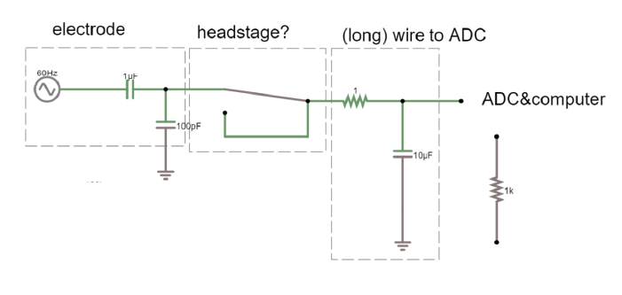
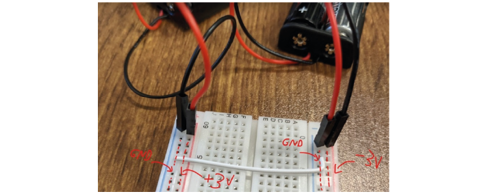
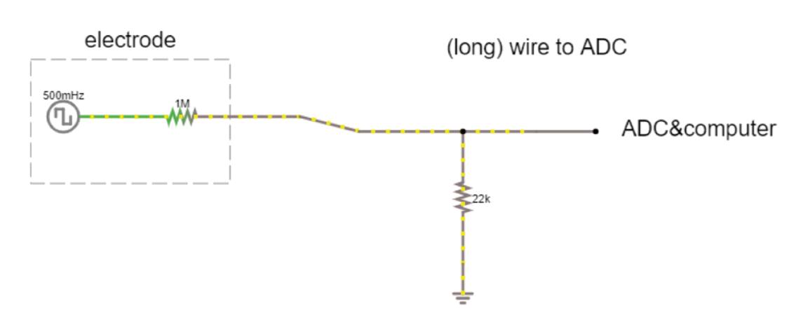
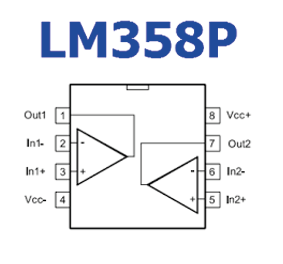

Exercises Day 2 TA¶
Impedance¶
Previously, we built the circuit below using the circuit simulator. We saw that the electrode cannot drive a cable that has a shunt capacitance, but that an amplifier can protect our signal source and provide current to power the rest of the circuit.
Open the simulator link. In the long wire configuration, swap out the 20pF and 100pF capacitor for a 1MOhm and 22kOhm resistor. What changes?
Operational Amplifiers¶
Using an operational amplifier (op-amp) means we draw (almost) no current, which means we can measure voltages even if they come from things that can’t deliver current (like our cells). Let’s build the above example from the simulator in real life, on the breadboard! We’ll treat the ‘Blink’ example as our neuronal data and see what happens to this signal if we just have a wire, and then see the effect of replacing this wire with an op-amp.
Build voltage rails¶
Warning
Make sure that the pins from the batteries do not touch, and if they’re not in use, best to put some tape on them so they don’t touch things. ‘Short-circuiting’ the batteries (connecting them without any sort of resistance) causes a huge current to flow from the + to -, enough to… melt stuff.
Note
This is way easier if you check that everyone has the blue line of the breadboard at the top, the battery holders on the right, and the teensy on the left from the start. Removing the teensy can bend the pins, if they put it all the way to the left, they can leave it there all week.
First, we need to make the ‘rails’ that will provide the voltage for our op-amp. - this means that we need to have a positive and negative voltage ready, so that we can amplify a signal that lives around some reference level that we shall call 0 volt. If we only have 0 and +3V then any negative signal will floor and stay at 0.
To do this we use a common trick and turn two regular power supplies into a bipolar power supply. In our case we use batteries, because they’re cheap and pretty much fully noise-free. One pair of batteries provides 3V relative to ground, 0V. Both ground rails are connected. The second pair of batteries is reversed to provide -3V relative to ground, so that we get a + and a – voltage.
Tip
Check which way up your breadboard is (keep the blue line at the top). Following the figures precisely will make debugging much easier later on.
Tip
Remember or label which side is +3 and which is -3
Add bypass capacitors¶
Bypass capacitors are simply small capacitors that act like little secondary batteries. In our case we’ll add two 100nF (marked 104) caps, one to each rail, so GND to 3V and GND to -3V. The reason is that the batteries we use have what’s called a high ESR - ‘equivalent series resistance’ and some capacitance, so they are not great at quickly providing current. This means that when our op-amp starts doing stuff, it can run out of current for a very short time, until the battery can drive the rails back to their original voltage. This is bad for the signal quality and causes all kinds of issues. So, we give the rails the ability to very quickly provide a small amount of current from these small capacitors. We’re exploiting the fact that these caps have very low ESR and can provide current pretty much instantaneously. If the battery briefly can’t provide current, the bypass capacitors will discharge, providing quick back-up current. The fact that they’re too small to power anything for more than a millisecond does not matter here, at that point the batteries have caught up.
Add two 100nF (marked 104) caps, one to each rail, so connecting GND to 3V and connecting GND to -3V (see image below).
Build ‘long wire’ equivalent circuit¶
Now we will build the equivalent of having an electrode picking up a neuronal signal, and a long wire connecting this electrode to the recording system, without a headstage in between. We’re going to build the circuit below (note the square wave input, just like the blink example). We’re using resistors to model our electrode and shunt voltage divider. For now, we don’t need the voltage rails, they will be used to power our amplifier later.
Note
In the previous examples we had a shunt capacitance going to ground. Now, we have a going to ground, this is because of the slow frequency of the blink signal (remember slow freq = high capacitor impedance, so at the really slow blink frequency (0.5 Hz) we don’t actually lose a lot of voltage over the capacitance to ground). Our real, neuron signals are way faster, and then the shunt capacitance becomes a problem. To represent how long cables can cause us to lose signal, for this low frequency, we use a resistor to ground.
Upload the Blink example to your teensy (or just run it if still loaded).
Send the teensy output through a 1MOhm resistor. This makes it behave a bit like a biological signal coming from an electrode.
A 22kOhm resistor to ground simulates the signal lost to ground over a really long wire.
Add one ‘readout’ wire connected to ground (for your oscilloscope ground lead)
Connect a second readout wire so that you can measure the output voltage of your system.
Now measure the output with the oscilloscope at the points marked by red arrows in the image below, and complete the first column of the table below:
(+) Probe Location |
Signal Amplitude (Long Wire) |
Signal Amplitude (Op-Amp) |
|---|---|---|
|
||
|
||
|
How much signal is lost by this ‘recording system’?
Replace ‘long wire’ with ‘headstage’¶
Now we will keep almost everything the same, but we will replace our long wire with a ‘headstage’. We will use only the most basic part of the headstage, an operational amplifier.
This is the op-amp you have. Make sure you’re looking at the op-amp (LM358P), not the instrumentation amp (AD622). The op-amp should say ‘LM358’ on it.
Place the op-amp on your breadboard, with the semicircle cutout on the left.
Connect the +3 voltage rail to ‘Vcc+’ and the -3 voltage rail to ‘Vcc-‘
Put the electrode output wire into the + input of your op-amp, and the output of the op-amp into the ‘wire’ simulation circuit.
Feed the output of the op-amp, back into the – input.
Now measure the same three points as before and complete this table:
Measuring Signal Amplitude¶ (+) Probe Location
Signal Amplitude (Long Wire)
Signal Amplitude (Op Amp)
Teensy Output Pin 13
Leg of 1 mOhm Resistor
Readout Wire
Hint
The wire now cannot destroy our signal, because even though we did not amplify it at all (we only have unity gain) we ‘buffered’ it. Now the op-amp can push as much current into the wire as is needed and your signal makes it through.
Note
Adding in the amplifier ‘headstage’ should protect the signal both at the readout wire and the electrode resistor, going from mV range in the long wire configuration to V range with the headstage. Try asking whether people understand why it’s also higher at the electrode- if students find that strange it’s often because they’re thinking of the amplifier as actually increasing the signal (as in, introducing a gain) rather than realising that it is the high input impedance that is protecting our signal.
Differential Signals¶
Measure across your fingers with the oscilloscope 1x probe. How big is the amplitude of this signal? Compare this to the size of a spike, around 100 µV. Could you see a spike on top of that noise?
So far, we have only considered the signal coming into our recording electrode, relative to ground. We will now add a reference electrode in the simulator.
You can think of the small square waves as spikes you are trying to detect, and the sine wave (that both reference and your measurement electrode share) as background- maybe slow EEG signals or 50Hz noise, which is likely to be present at both electrodes.
Step-by-step, we are going to build our ‘goal’ circuit has the following properties:
Input from the measurement electrode (spikes)
Input from the reference electrode (common noise)
Output: Reference subtracted from measurement, multiplied by gain
Does not draw current from cells

Connect reference electrode¶
Connect the reference and spike signal directly to your simulated electrode circuit, and in turn to the op-amp in open-loop configuration. Connect the output of the amplifier to the PC. Run the simulation. What (in V) is the amplifier giving as output?
We have successfully subtracted the reference signal (as the output displays square waves), and our input signal is protected (no current is being drawn), but the output is saturating. This is a consequence of the huge gain of the op-amp mentioned earlier. This means we can’t just use it as a differential amplifier- any tiny difference between the inverting and non-inverting inputs will get amplified so much that the output will saturate, and be equal to whatever voltage is powering the amplifier (in this case, + and - 15 V).
Measurement electrode input (spikes) YES
Reference electrode input (common noise) YES
Output: Reference subtracted from measurement, multiplied by gain YES… but gain is too large!
Does not draw current from cells YES
Provide negative feedback¶
We need to do something to prevent our amplifier from always hitting power-rail values. We can provide negative feedback to the amplifier by looping the output back and feeding it into one of the terminals. The amplifier is going to do the same thing as before; output the difference between + and - multiplied by its huge gain. The output will rise rapidly, however this time, as soon as it reaches the value of the + terminal, the + and – are the same value and there’s no difference left to amplify.
Put the reference signal to one side/ delete it for now. Connect the amplifier output to the inverting input. What happens to your output now? What is the gain?
Note
Now we’re just seeing our input signal replicated at the output of the amplifier with a gain of 1. circuit link
Measurement electrode input (spikes) YES
Reference electrode input (common noise) NO
Output: Reference subtracted from measurement, multiplied by gain NO
Does not draw current from cells YES
We’ve stopped it saturating, but we still can’t amplify, or subtract our reference electrode.
Feed back only 50% of signal¶
Let’s start with amplifying.
If we only feed back 50% of the output voltage, the amplifier will again detect a difference between the + and - terminals, and will increase (double) its output voltage until - and + are equal once more. We can vary the proportion of the output voltage that we feed back, in order to adjust the gain of our amplifier. To do so, we need to divide the voltage into the part we want to send to the amplifier, and the part we want to get rid of, which we can route to ground.
Add resistors to your simulated circuit to build an amplifier with a gain of 2, using what you learned about voltage dividers on day 1. The answer is here: Amplifier with Voltage Divider, but try it on your own first.
Now we have a. protected our signal and b. amplified it!
Measurement electrode input (spikes) YES
Reference electrode input (common noise) NO
Output: Reference subtracted from measurement, multiplied by gain NO.. but we have a reasonable gain now.
Does not draw current from cells YES
We want to introduce our reference again. How can we do that, and keep all those other properties we worked so hard for?
Build inverting op-amp¶
Both the input and the feedback need to share the ‘-’ input, so that the amplifier doesn’t saturate. First, we will build an inverting op-amp, by putting the ‘-’ input in the middle of a voltage divider, with the feedback on one side, and the input on the other. We connect ‘+’ to ground. Now the op-amp will output whatever voltage is needed to keep the ‘-’ at ground level, i.e. 0 V (because we connect ‘+’ to ground, if we had another voltage at ground it would keep ‘-’ at that voltage).
What voltage does the amplifier have to output to keep ‘-‘ at 0V?
i.e. the amplifier has to provide directly opposing voltage to whatever comes in at the input.
The cool but confusing bit here is that the ‘-’ input is always at 0V, which is why we call it ‘virtual ground’. This circuit works due to the fact that current still flows through the circuit (but never into the amplifier!), even though the voltage of the node is kept at 0.
Build this inverting op amp. Check in the simulator that this virtual ground really works. If this is still mysterious, watch the section in this video (here: https://youtu.be/7FYHt5XviKc?t=933 ).
Replace ground with DC signal¶
Ok now we have the inverting amplifier, what good is that? Well, we have freed up the ‘+’ input and can now replace the ground at the ‘+’ input with something else.
Add a constant +2.5 V to the input. What happens to the output?
Note
It should be shifted upwards, replacing the virtual ground of 0 with +2.5
Because the initial input was already inverted, by adding to that we have now effectively subtracted one voltage from another. We are close to having what we want, we just need to replace the stable offset voltage at ‘+’ with the 2nd signal we wish to subtract (our reference).
Add reference input to ‘+’¶
Replace the +2.5 signal with your reference electrode.
Does this work? What went wrong? Try to figure this out but don’t get stuck forever.
Solution here: Differential Amplifier Solutions.
Measurement electrode input (spikes) YES
Reference electrode input (common noise) YES
Output: Reference subtracted from measurement, multiplied by gain NO
Does not draw current from cells YES
Final Differential Amplifier¶
Now we’re pretty much there! The only thing left is that right now our amp outputs the difference between our measurement and reference, but inverted. So just swap the inputs and we’re there!
Note
The reference coming into the - means that the amplifier no longer has to provide this output in order to make the + and – match, so we get rid of the shared signal. Need to look at difference: want: https://tinyurl.com/y4aps4r2
In the simulator, re-create a differential amplifier.
Solution here: Final Differential Amplifier.
Measurement electrode input (spikes) YES
Reference electrode input (common noise) YES
Output: Reference subtracted from measurement, multiplied by gain YES
Does not draw current from cells YES
If you have this circuit working, start changing the 10M resistor on the top to another value and see what happens.
Change it to 11M or so. This is very roughly what a normal op-amp would look like. We’re getting some noise but it’s not horrible yet.
Now bump up the common mode noise a bit. Change the voltage on both 60Hz sources from 5V to 50V. What happens?
So, can we use this shiny new differential amplifier to record neural signals? We worked so hard to avoid drawing current from our frail electrode signal, and now we’re telling you to put big voltage dividers right at the inputs of our op-amp? That seems bad. Also, as we’ve just simulated, often op-amps do not have equal input impedances across + and -! This is similar to the example form earlier where we modelled a long wire, except that now you have two wires of different lengths in front of your inputs. If you’ve every measured electrode impedance, how much variation was there between electrodes? To get this differential amplifier to work, each electrode and resistor would have to be identical, which is, in practice, impossible.
Puzzle for extra credit: How can we preserve the nice differential properties of the amplifier we just built, but still have our signals go straight into like a ‘+’ terminal on an op-amp to avoid impedance imbalances, and to avoid drawing current through voltage dividers? Extra hint: op-amps are cheap.
TA Wrap Up¶
Solution: ‘buffer’ the inputs individually before they are subtracted, and then the differences in input impedances don’t matter! This is building an ‘instrumentation amplifier’ out of 3 op-amps:

So far: we know how to protect our signal and amplify it. Tomorrow we’ll look at getting signals from our electrodes, filtering them, and sending them to our computer.
Acknowledgements¶
Written by:
Alexandra Leighton
Joana Neto
Jakob Voigts
Aarón Cuevas López
Jon Newman
With material from:
Joana Neto, 2018; Materials and neuroscience: validating tools for large-scale, high-density neural recording, 2018
Jon Newman and Jakob Voigts, 2017; Intro to Chronic Ephys (presentation at TENSS)
Mitra Javadzadeh, 2017; Building an analog ephys recording system (practical exercises developed for TENSS)
Circuit Simulator version 2.4.6js. Original by Paul Falstad, JavaScript conversion by Iain Sharp
Licensing¶
This work is licensed under CC BY-SA 4.0.
To view a copy of this license, visit https://creativecommons.org/licenses/by-sa/4.0/